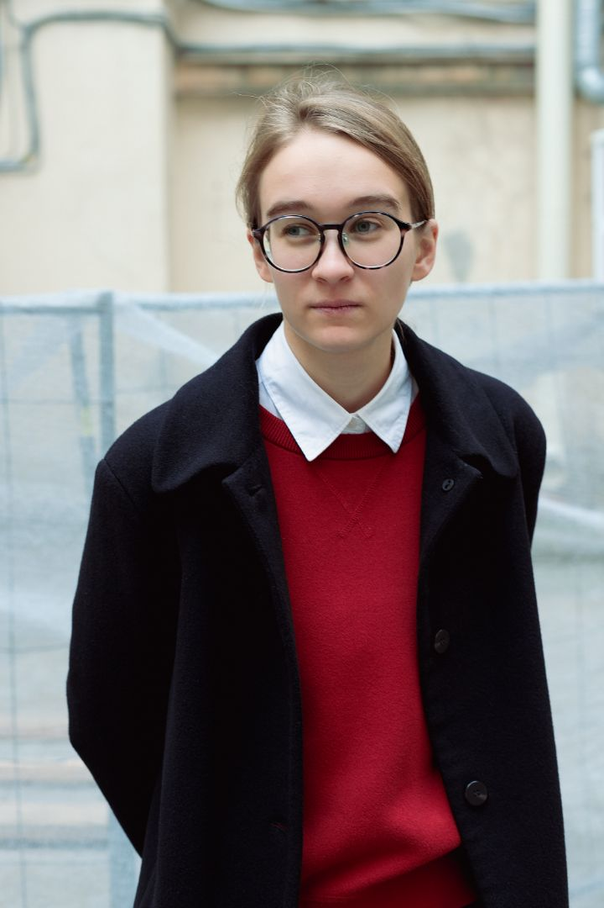

Елизавета Черкасова — художница, работающая
с фотографией. В её практике два основных
направления: проекты на стыке искусства и науки,
а также работы, основанные на личном опыте.
В научных проектах Елизавета обращается
к ботанике и астрономии, превращая научные
наблюдения в визуальные метафоры. В серии
«Пробиться» она фотографирует растения,
прорастающие сквозь бетон, и через их стратегии
выживания говорит о взрослении и адаптации.
Проект «ЗIATLAS» посвящён межзвёздному объекту
и неопределённости, в которой научный факт
соприкасается с мистификацией. Работа над ним
велась в диалоге со специалистом по контролю
космического мусора Вадимом Погореловым.